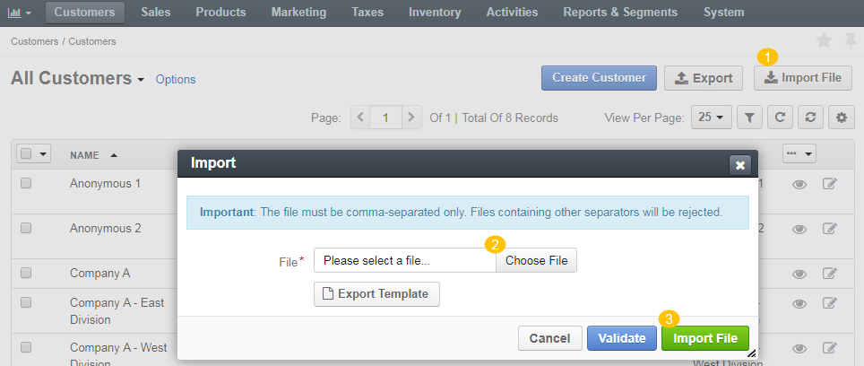

Export and Import¶
Exporting Bulk Items¶
You might need to export the necessary information and download it as a .csv file to reuse it in the third-party systems. You can export customer data (accounts, contacts, customers, customer users, business customers), sales data (leads, opportunities, prices in the price list, products), taxes (rates, rules), warehouse, and inventory information (inventory levels and statuses).
Another scenario for using export is when you plan bulk data update that is easily automated in the spreadsheet software (e.g. raise the price by 20%).
To export the necessary records (e.g. customer information) in a .csv format:
In the main menu, navigate to menu item to import the list of the necessary data (e.g. Customers > Customers).
The following screen opens.
Select the items to export using check boxes at the beginning of the corresponding rows. You can filter the list in the table header, if necessary.
Click Export.
After the following notification, you will receive an email with the link to download the .csv file.

Open the email and click the Download link.
The file is automatically downloaded.
Importing Bulk Items¶
To streamline adding a massive bulk of items, like customer information, products, prices, or inventory information, you can import the bulk details from a .csv file.
To import a bulk of items:
In the main menu, navigate to menu item to import the list of the necessary data. The item list opens.
Click Import File on the top right.
In the Import dialog, click Choose File, select the .csv file you prepared, and then click Import File.

Click Export Template to download a sample .csv file with the necessary headers.
Prepare data for import: Based on the downloaded file, create your bulk information in the .csv format. Once your file is ready, click Choose File, select the prepared comma-separated values (.csv) file, and click Import File.
Validate import results: Click Validate to check your import results. If there are any Records with errors, fix them in the .csv file before starting the import.
Launch import: After successful validation, click Import File.
Click Cancel to decline the import.
Important
Interactive status messages inform about the import progress, and once the import is complete, the changes are reflected in the list upon refresh. Additionally, an email message with the import status is delivered to your mailbox.
Follow the on-screen guidance for any additional actions. For example, for the inventory template, select one of the options: a) inventory statuses only or b) detailed inventory levels.
Related Topics¶
- Importing Accounts
- Importing Contacts
- Importing Customers
- Importing Customer Users
- Importing Leads
- Importing Opportunities
- Import Prices Into the Price List
- Importing Product Information
- Importing Product Attributes
- Importing Coupons
- Importing Taxes
- Importing Tax Rules
- Importing Inventory Statuses
- Importing Inventory Levels